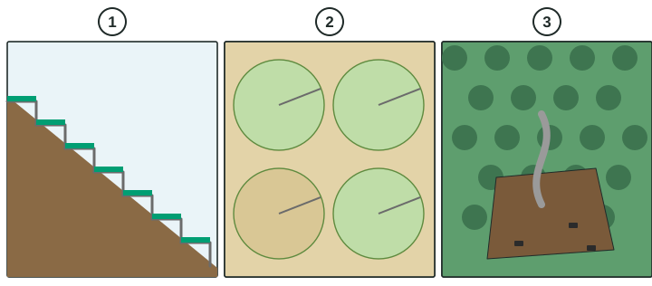

Consequences of Agricultural Practices
Farming changes landscapes through slash and burn, deforestation, terracing, irrigation and wetland draining.
Part 1 · Hook
Why this matters
Part 2 · Before you start
What this builds on
Part 3 · Prerequisite check
Quick check before you start
1. What is irrigation?
- Supplying water to crops by canals, pipes or sprinklers
- Cutting a slope into flat steps
- Letting a field rest for many years
- Moving herds to fresh grass
Show the answer
Irrigation brings water where rain alone is not enough.
- Correct: Supplying water to crops by canals, pipes or sprinklers:
- Cutting a slope into flat steps:
- Letting a field rest for many years:
- Moving herds to fresh grass:
2. What does sustainability mean?
- Using resources so that future generations can still meet their needs
- Using as many resources as possible now
- Growing just one crop
- Moving people from farms to cities
Show the answer
Sustainability balances use today against needs in the future.
- Correct: Using resources so that future generations can still meet their needs:
- Using as many resources as possible now:
- Growing just one crop:
- Moving people from farms to cities:
Part 4 · See it
See it first

Part 5 · Step by step
How it works, step by step
- Planners diverted the rivers feeding the Aral Sea to irrigate cottonthe sea shrank and split
- Irrigation water evaporated from desert fieldssalt built up in the soil
- The dry seabed was exposed to windsalty dust blew onto farmland and towns
Part 6 · Key ideas
Key ideas
- Practices that change landscapes: slash and burn, deforestation, terracing, irrigation, draining wetlands, pastoral nomadism.
- Environmental effects: pollution and dead zones from fertilizer runoff, salinization from irrigating dry land, desertification of dry lands, loss of habitat.
- Conservation: terraces, contour plowing, no-till farming, cover crops, drip irrigation.
- Societal effects: changing diets (more meat, more feed crops), economic purpose (subsistence or commercial) and who does farm work.
Part 7 · Misconception
A common mistake
The wrong idea: Changing a landscape for farming always harms the environment.
What actually happens: Effects can be positive or negative. Terracing changes a slope and also conserves soil; irrigation feeds millions but can cause salinization.
Part 8 · Check yourself
Check yourself
Exam-style questions. Anything you miss goes into your review queue.
Image
Three farm landscapes

1. Which scene shows terracing?
- Scene 1
- Scene 2
- Scene 3
- Scenes 2 and 3
Show the answer
Terracing cuts a slope into flat steps. Each step holds soil and water, as on the rice terraces of the Ifugao people in the Philippines.
- Correct: Scene 1: Right: scene 1 shows a slope cut into flat steps held up by walls.
- Scene 2: Scene 2 shows circles of crops watered by pivoting pipes: irrigation.
- Scene 3: Scene 3 shows forest cleared and burned: slash and burn.
- Scenes 2 and 3: Neither shows steps cut into a slope.
2. Scene 2 shows circles watered by pumping groundwater in a dry region, like those over the Ogallala Aquifer in the US Great Plains. What long-term risk does this practice carry?
- The forest regrows over the fields within a few years
- Steep slopes wash away when the walls collapse
- Water is pumped faster than rain refills the aquifer
- Fields lie empty for years so the soil can rest
Show the answer
Irrigation turns dry land into intensive farmland, but pumping more than nature replaces depletes aquifers, and in hot places it can also leave salts in the soil.
- The forest regrows over the fields within a few years: The land is dry grassland, not forest, and the fields stay in use.
- Steep slopes wash away when the walls collapse: The scene shows flat land, not terraced slopes.
- Correct: Water is pumped faster than rain refills the aquifer: Right: heavy pumping has lowered water levels in parts of the Ogallala Aquifer.
- Fields lie empty for years so the soil can rest: These fields are farmed every year.
3. If the practice in scene 3 is repeated across large areas with short rest periods, what is the most likely environmental effect?
- Salt builds up from years of irrigation
- More forest grows than before
- Groundwater levels fall from heavy pumping
- Deforestation and loss of soil nutrients
Show the answer
Slash and burn can last for generations with long rests. With more people and short rests, it adds to deforestation and soil loss.
- Salt builds up from years of irrigation: Salt buildup comes from irrigation in dry places, not from clearing forest.
- More forest grows than before: Clearing more often leaves less time for forest to regrow.
- Groundwater levels fall from heavy pumping: Scene 3 shows no pumps or wells.
- Correct: Deforestation and loss of soil nutrients: Right: clearing more forest more often removes tree cover and wears out thin soils.
4. Which scene shows a practice that reduces soil erosion on steep land?
- Scene 2
- Scene 1
- Scene 3
- Scenes 2 and 3 together
Show the answer
Terracing changes the landscape and conserves soil and water on steep slopes, a positive effect of human change to land.
- Scene 2: Scene 2 is on flat land and is about water supply, not erosion on slopes.
- Correct: Scene 1: Right: terraces slow running water so it soaks in instead of carrying soil downhill.
- Scene 3: Burning and clearing forest leaves soil bare, which raises erosion.
- Scenes 2 and 3 together: Neither scene shows a conservation practice on a slope.
5. In the Amazon basin of Brazil, large areas of rainforest have been cleared for cattle pasture and soybean fields. Which environmental effect does this practice most directly cause?
- Deforestation and loss of habitat for plants and animals
- Salinization from many years of irrigation in a dry climate
- Rising groundwater from heavy pumping
- Terraced hillsides that stop soil erosion
Show the answer
Commercial ranching and soy farming are leading causes of deforestation in the Brazilian Amazon.
- Correct: Deforestation and loss of habitat for plants and animals: Right: clearing forest for farms removes tree cover and the species that live there.
- Salinization from many years of irrigation in a dry climate: The Amazon is wet; the main effect is forest loss.
- Rising groundwater from heavy pumping: Pumping lowers groundwater; it is not the issue here.
- Terraced hillsides that stop soil erosion: Terraces are a conservation practice, not the result of clearing.
6. Put the steps of salinization in order, from cause to effect.
- Farmers irrigate dry land for many years
- Water evaporates in the hot sun
- Salts in the water are left in the soil
- Crop yields fall and some fields are abandoned
Show the answer
Irrigation brings water with dissolved salts; evaporation leaves the salts; they build up until crops suffer.
- Correct order: 1. Farmers irrigate dry land for many years 2. Water evaporates in the hot sun 3. Salts in the water are left in the soil 4. Crop yields fall and some fields are abandoned
Part 9 · Summary
Summary
Part 10 · Up next
What comes next
Part 11 · Connections